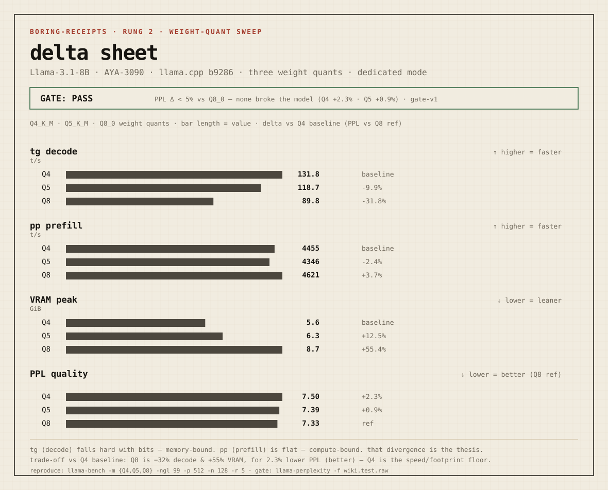

Receipts
Send branch + command shape. We return boring receipts.
The ladder
| rung | who | proves | reproducible by |
|---|---|---|---|
| 1 - noob | anyone with a GPU | prebuilt llama.cpp + a GGUF, one command, real tok/s | a beginner in ~10 min |
| 2 - quant | local user | same model across quants: the speed↔footprint trade-off | rung 1 |
| 3 - build | tinkerer | source build + flags (flash-attn) delta | rung 2 |
| 4 - serving | someone who serves | vLLM/SGLang throughput, req/s, TTFT, ITL under concurrency | rung 3 |
| 5 - Waffle House | the community | a TriAttention/longctx/MTP branch + delta + quality gate + failures | rung 4 |
Nodes
| node | machine | engine | status |
|---|---|---|---|
| AYA-3090 | Windows · RTX 3090 24 GB | llama.cpp (native) | live |
| AYA-3090-wsl | WSL2 Ubuntu | vLLM / SGLang | available |
| AYA-4090 | RTX 4090 · Win+WSL2 | vLLM | later - LLM-busy |
The delta sheet
Rung 2 - weight-quant sweep · Llama-3.1-8B · AYA-3090. The canonical visual: gate stamp first, delta over a zero dead-line, color marks series not verdict.

decode (tg) collapses with bits - memory-bound. prefill (pp) stays flat - compute-bound. the divergence between the two is the whole prefill/decode thesis. · full receipt R2 · R1 baseline
R3 - context sweep (0→64K). On the context axis the thesis flips: prefill and decode both collapse (pp −94%, tg −85% by 64K) - the bottleneck is attention over the growing KV cache, not the weights. decode at 64K is 20 t/s, the honest number a "128K context!" claim hides. · full receipt R3
R14 - patched source KV dtype. R13's toolchain blocker was overcome with VS2019, explicit SDK tools and a local PDL guard patch. The axis now runs, but the short-context speed result is negative: q8/q8 decode is 0.92× f16 and q8/q4 decode is 0.55× f16, with q8/q4 prefill collapsing to 0.04×. · full receipt R14
R15 - KV dtype long-context timeout. The long-context follow-up makes the negative stronger: q8/q8 completes 64K but decode falls from 0.92× f16 at depth 0 to 0.69× at 64K. q8/q4 emits only 0, 4K and 16K rows, reaches 1.71 tok/s decode at 16K, then exits -1 before the 32K row. · full receipt R15
Research sibling cards
RS1 - RealRAG entity-hop path construction. This one deliberately cites the probe/RAG program in the sibling repo instead of absorbing it into the runtime axes. Entity-hop graph/path prompting beats BM25→BGE strong baseline (EM 0.25 vs 0.09), while strict single-candidate ECD fails the follow-up gate (EM 0.13 vs path prompt 0.26). · full receipt RS1
RS2 - confidence-gated answer rerank. Keep the path answer by default; intervene only when a verifier is high-confidence and non-overlapping. 100-case was positive and 300-case v1 gave a small clean gain, but the 500-case machine-only follow-up shows no delta vs direct path prompting (EM 0.216 vs 0.216; wins 2, losses 2). · full receipt RS2
Read the doctrine
- HOW TO READ - claim, target, command, environment, results, gate, evidence, non-claim, next step
- CANON - for whom (a receipt re-executes; the ladder is transferable trust)
- AXES - what (axes of variation, the quality gate, scoring, visual form)
- PROCESS INDEX - grouped by gesture, not chronology
- NEGATIVES - blocked, mixed and no-delta receipts with equal standing
- PRESERVATION - static export packages and hashes
- GENEALOGY - crypto detour → Waffle/TurboQuant validation → boring receipts
- GLOSSARY - in what words (tok/s, pp/tg, TTFT, quant, ngl…)
- FORMAT - how the receipt format evolves (v1.2: non-claims; v1.1: dedicated_mode)